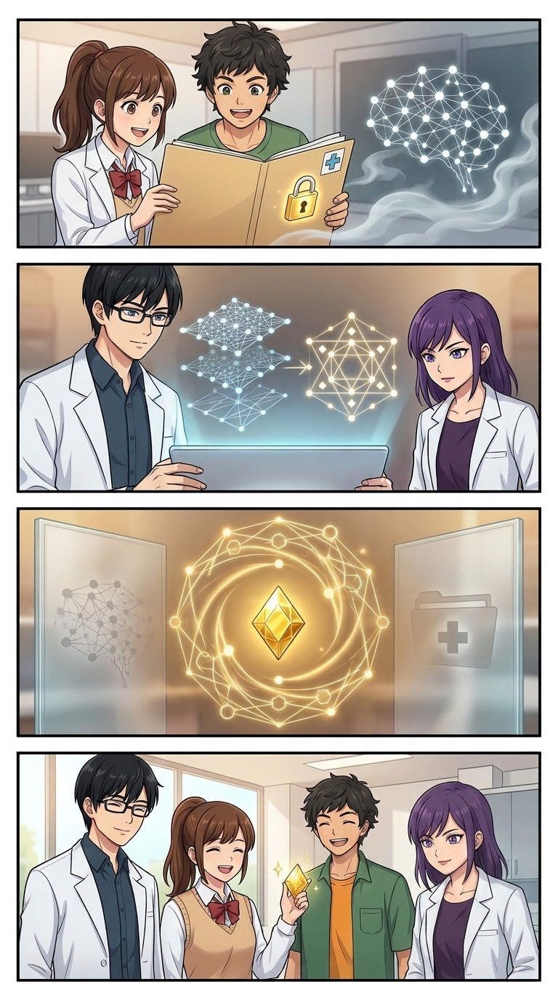
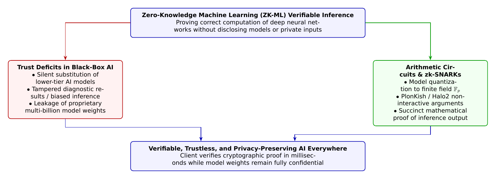

🎨 4コマ漫画挿絵（文字なし）
AI高解像度生成
▲ 【挿絵】青葉台高校 情報科学部＆帝都科学大学サイバーディフェンス・ラボでの実践シーン
📖 小説本文
### 1. ブラックボックスAIが下した診断
「悠真先輩、提携先の総合病院から極めて深刻な相談が寄せられました」 白石結衣が、暗号化された医療レポートを開きながら言った。
「クラウド型AI診断サービスを利用した稀少がんの再発リスク判定において、ある患者のデータに対する出力スコアが、先週と今週で不可解に激変したそうです。 病院側が『本当に契約通りの高精度・最新版モデルで推論が実行されたのか？ 内部で安価な軽量モデルにすり替えられたり、計算結果が意図的に歪められたのではないか？』と調査を求めていますが、AIベンダー側は『モデル構造と重み（Weights）は数億円を投資した最高機密であり、外部には一切開示できない』と回答を拒否しています」
葵が眉をひそめた。 「AIの判断が人の生死や自動運転の安全を左右する時代なのに、ブラックボックスの内側で本当に正しい推論が行われたのかを第三者が確かめる手段がないなんて……」
「企業が知的財産（モデルの重み）を守りたい要求と、利用者が推論結果の完全性を検証したい要求、そして患者が自身の生体データを秘密にしておきたいプライバシー要求——この三者が完全に衝突しているんだ」 悠真が告げた。
---
### 2. 算術回路の錬金術：ZK-MLの基礎理論
「その三項対立を、数学の力で完全に調和させる技術革新こそが『ゼロ知識機械学習（ZK-ML: Zero-Knowledge Machine Learning）』だ」 結衣の瞳が知的な輝きを帯びる。
「ゼロ知識証明（zk-SNARKs）を用いれば、『ある非公開の入力 $x$（患者データ）と非公開の重み $W$（モデル知的財産）に対して、公開されたモデル構造 $f$ を正しく適用した結果、確かに診断出力 $y$ が得られた』という計算の正当性だけを、非対話的な短い暗号証明（Proof）として生成できます」
蓮が首を傾げた。 「でも結衣、ニューラルネットワークの計算は浮動小数点数（FP32/FP16）の行列積やReLU、GELUといった非線形活性化関数の塊だよね？ ゼロ知識証明の数学体系は、大きな素数を法とする『有限体 $\mathbb{F}_p$ 上の加算と乗算（算術回路）』しか扱えないはずじゃ……？」
「そこがZK-MLの真骨頂よ、蓮くん」 結衣が数式を提示した。
1. **固定小数点量子化（Quantization）**: 連続値の重みとバイアスを、高精度を維持したまま有限体 $\mathbb{F}_p$ 上の整数表現へとスケーリング写像する。 2. **多項式アフィン変換とルックアップテーブル**: ReLUやSoftmaxなどの非線形演算を、PlonKish体系のPlookup（ルックアップ引数）やHalo2のゲート制約に落とし込み、算術回路（Arithmetic Circuit）として定式化する。 3. **簡潔な証明の生成（Succinct Proof $\pi$）**: 推論の全計算ステップが回路の制約式 $C(x, W, y) = 0$ を満たしていることを証明鍵で圧縮し、わずか数百バイトの暗号学的証明 $\pi$ を生成する。
---
### 3. 数ミリ秒の検証：疑念の氷解
「クライアント側の検証コストは、モデルの巨大さに関係なく、わずか数ミリ秒、数回の楕円曲線ペアリング演算で完了する」 悠真が端末上でZK-ML検証エンジン（Halo2バックエンド）を起動した。
「ベンダー側が提示した診断結果 $y$ と、暗号証明 $\pi$ を照合するぞ」
蓮が検証コマンドを叩く。 画面に複雑な群演算のプログレスバーが走り、一瞬でコンソールに鮮やかな緑文字が表示された。
$$\text{Verify}(\text{vk}, \text{commitment}(x), \text{commitment}(W), y, \pi) \rightarrow \text{ACCEPT}$$
「……検証成功！ 確かに契約通りの正規モデルの重みコミットメントから、一切の改ざんや計算エラーなく導出された診断結果であることが数学的に証明されました！」 葵が声を上げた。
さらに結衣が差分解析ログを確認する。 「患者の生体検査値のわずかな数値変動が、高精度モデルの特定の受容野にクリティカルに作用したことが判明しました。モデルのすり替えでも不正でもなく、AIが微小な病変の兆候を極めて正当に捉えていた結果です！」
---
### 4. 信頼の代名詞としての数学
病院の担当医へ検証結果が暗号学的証明書とともに送付され、画面越しに安堵と感謝のメッセージが届いた。
「モデルの中身を1ビットも明かさず、プライベートな患者データも一切外部に漏らさず、それでも『計算が100%正しいこと』だけを世界中に確証できる……ゼロ知識証明って、本当に魔法のような数理ですね」 葵の言葉に、悠真と結衣、蓮が深く頷いた。
ブラックボックスの闇を切り裂き、透明な確信をもたらす数学の光。 人とAIが互いを疑うことなく、真に命を預け合える未来が、そこには確かに拓かれていた。
📊 セキュリティ構造図解 (TikZ LuaLaTeX生成)
国家安全基準・工学図解
▲ 【技術構造図】IPAデジタルスキル標準・国際規格に準拠した仕組みのモデル化